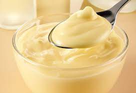

Custard

Simple Custard
Alteration of a few different recipes. Not too rich or too sweet as many egg custards can be. Can be served warm immediately or cold.
Ingredients
- 4 cups whole milk
- 1 tablespoon vanilla extract
- 1 teaspoon butter
- 4 eggs
- ½ cup white sugar
- 3 tablespoons cornstarch
Steps
- Cook and stir milk, vanilla extract, and butter in a saucepan over medium heat until simmering. Remove mixture from heat before it comes to a boil.
- Whisk eggs, sugar, and cornstarch together in a bowl until sugar dissolves.
- Set saucepan back over low heat. Pour in egg mixture slowly, whisking constantly, until custard thickens enough to coat the bottom of a spoon, 5 to 10 minutes.